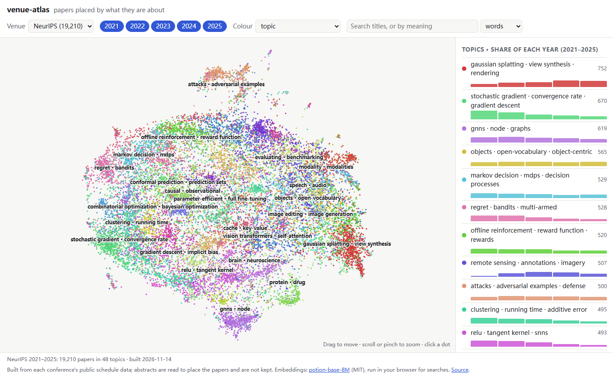

What a conference was about, year by year.
60,000 papers from seven venues on maps by meaning, in named topics with their share of every year. Search by meaning, in your browser; abstracts read, not kept.
